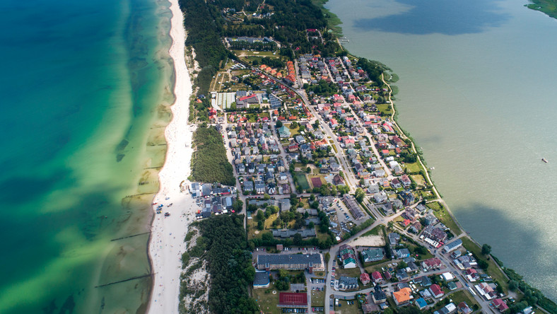

<!DOCTYPE HTML>
<html lang="pl>

<head>
	<meta charset="utf-8"/>
	<title>Wakacje 2020</title>
	<meta name="description" content="Wakacje"/>
	<meta name="keywords" content="Wakacje, Mielno, plaza, Morze"/>
	<meta http-equiv="X-UA-Compatible" content="IE=edge,chrome=1"/>
	<style>
	h1 {
	background-color: gray;
	text-align:center;
	}
	#h3 {
	 text-align: right;
	 color: green;
	}
	</style>
</head>

<body>
<br/></br>
<center> </center>

<h1><strong>Wakacje w Mielnie</strong></h1>

<center><p style="font-size: large">Mielno znajduje się na Wybrzeżu Słowińskim, nad Morzem Bałtyckim,</p></center>
<center><p style="font-size: large"> a także nad północnym i zachodnim brzegiem jeziora Jamno.</p></center>
<center><p style="font-size: medium">Północna część miasta leży na mierzei między jeziorem Jamno a Morzem Bałtyckim. </p></center>
<center><p style="font-size: medium">Mierzeję przecina kanał Jamieński Nurt, który stanowi także granicę miasta.</p></center>
<center><p style="font-size: large"> Miasto posiada także dwie integralne części miejscowości: Barnowo i Unieście.</p></center>
<h3><center> <a href="https://www.mielno.pl/"  target="_blank" title="Link do strony"> Link do oficjalnej strony Mielna </a></center></h3>
<center> </center>
<h3><center> <a href="https://www.baltin.pl/hotel?gclid=CjwKCAjw6fCCBhBNEiwAem5SOwv2D5mayiYxphPUT9iYRk3dHQxHaWLZepfW92BJpjux80uIDxtLGhoCnPAQAvD_BwE"  target="_blank" title="Link do strony"> Link do oficjalnej strony Baltin Hotel & SPA w Mielnie </a></center></h3>
<center> </center>
<br></br>
<center><p style="font-size: xx-large">Promenada w Mielnie</p></center>
<center> </center>
</body>

</html>
